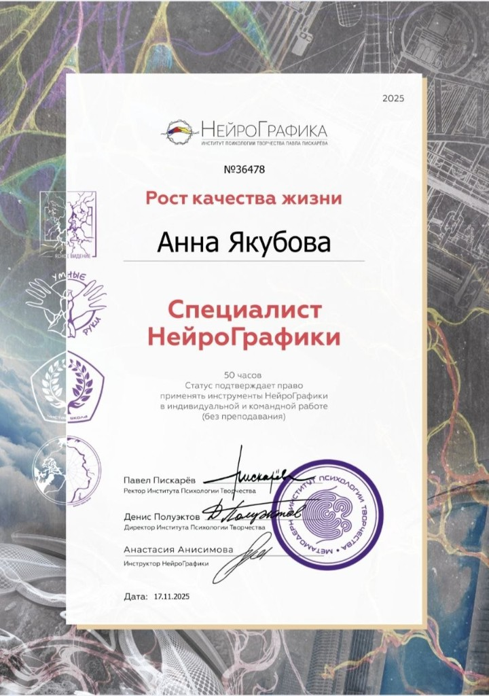
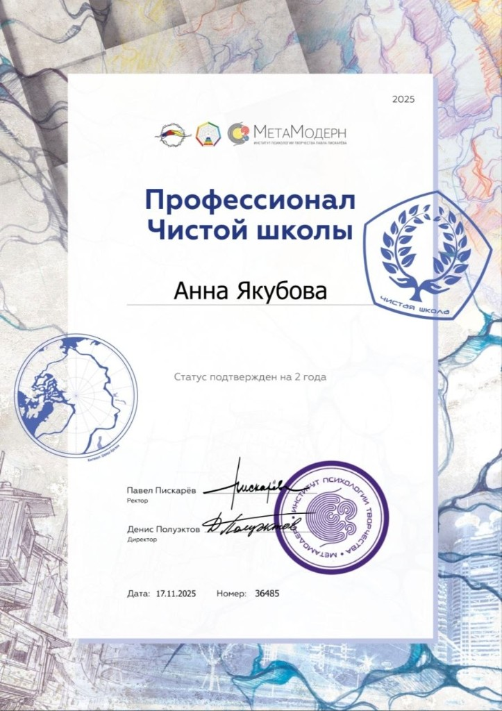
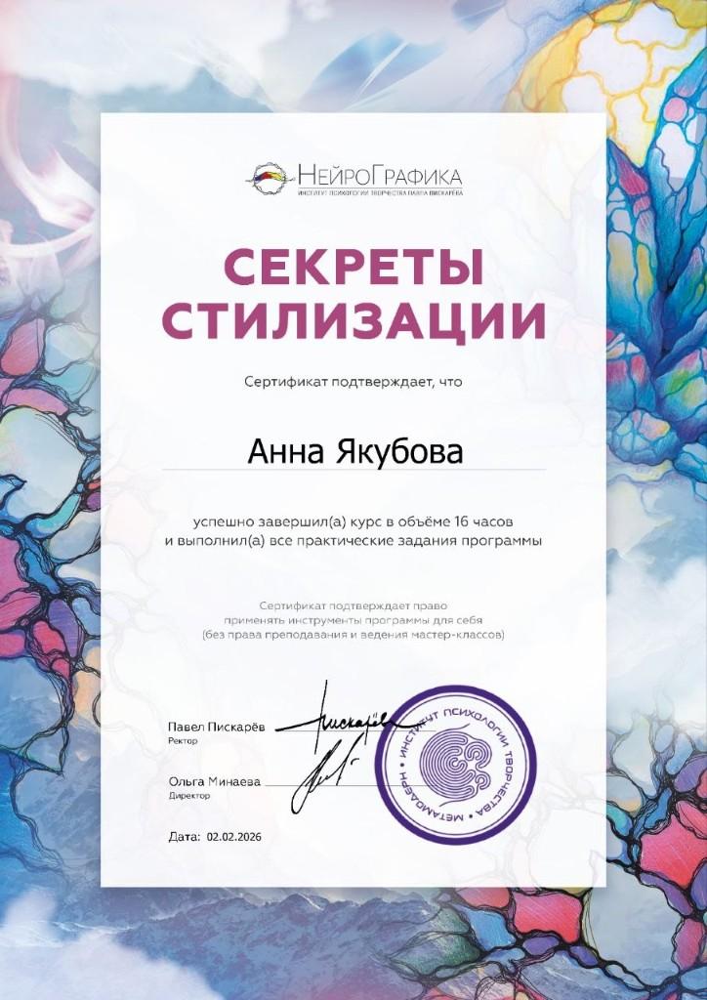
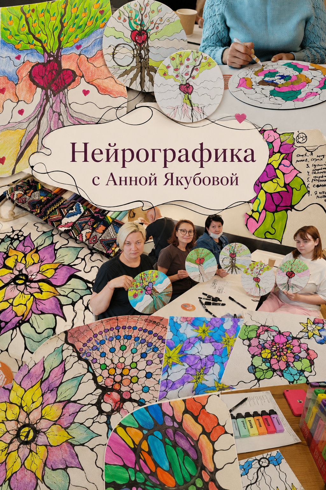

Нейрографика
Современный метод работы с сознанием и подсознанием через осознанное рисование — для изменения восприятия и внутренней трансформации.
НейроГрафика — это современный метод работы с сознанием и подсознанием через осознанное рисование, разработанный для того, чтобы изменить своё восприятие, избавиться от внутренних ограничений и найти вдохновение для действий.
Как это работает?
Когда вы рисуете — ваш мозг создаёт новые нейронные связи. В НейроГрафике вы используете специальные линии и формы, которые помогают «перепрограммировать» своё мышление, снять ограничения, освободиться от стереотипов и найти новые решения для своих задач.
С помощью НейроГрафики в личной сессии можно глубоко проработать такие запросы, как:
- Доход и карьера рост дохода, карьера
- Уверенность внутренняя опора, уверенность в себе
- Отношения отношения, любовь, гармония
- Эмоции снижение страхов, обид, тревожности
и многое другое
Форматы работы
Индивидуальные сессии, групповые мастер-классы, онлайн-практикумы. Анна сочетает нейрографику с элементами Матрицы Судьбы для более глубокой проработки. Следите за анонсами в Личном дневнике.
Сертификация НейроГрафики
Обучение в Институте психологии творчества
Анна Якубова прошла профессиональные программы у автора метода Павла Пискарёва и подтвердила квалификацию официальными сертификатами.



Доверяйте работу со своим сознанием только сертифицированным специалистам
Практика и мастер-классы
Рисунок, который меняет изнутри
На занятиях с Анной вы создаёте собственные нейрографические работы — через линии, цвет и форму приходит ясность, лёгкость и новые решения.
Групповые встречи, индивидуальные сессии и онлайн-практикумы — в атмосфере тепла, поддержки и творческой свободы.
Записаться в Telegram